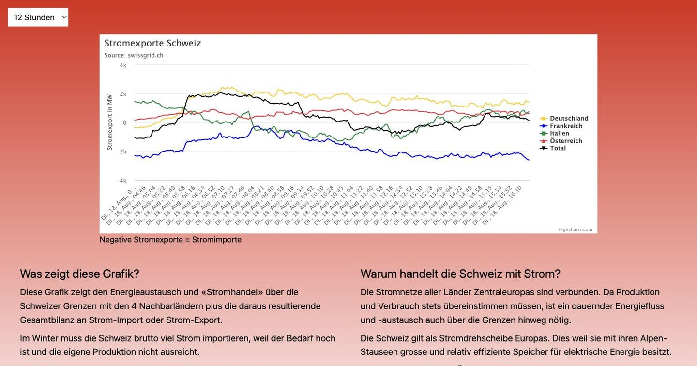
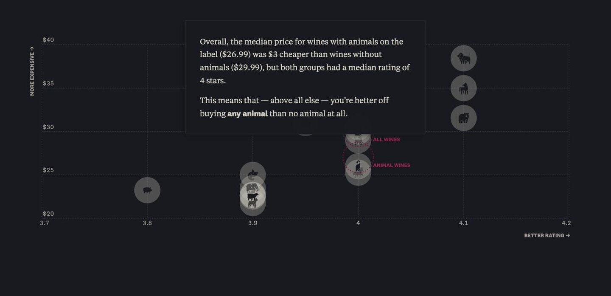
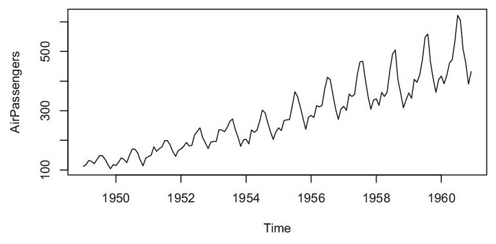
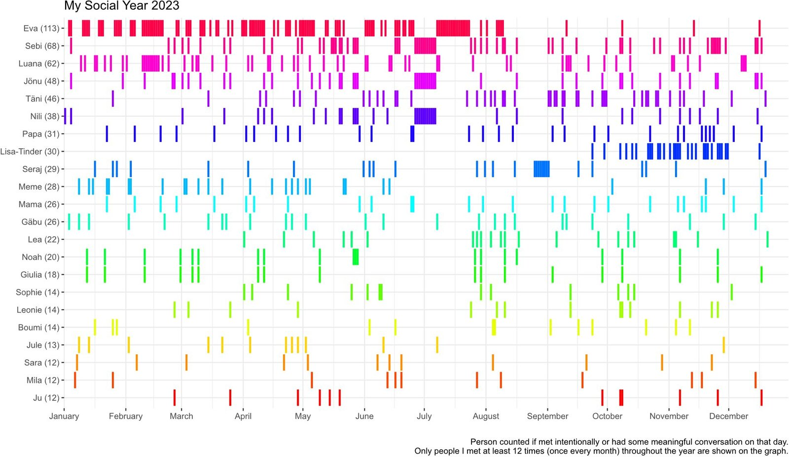
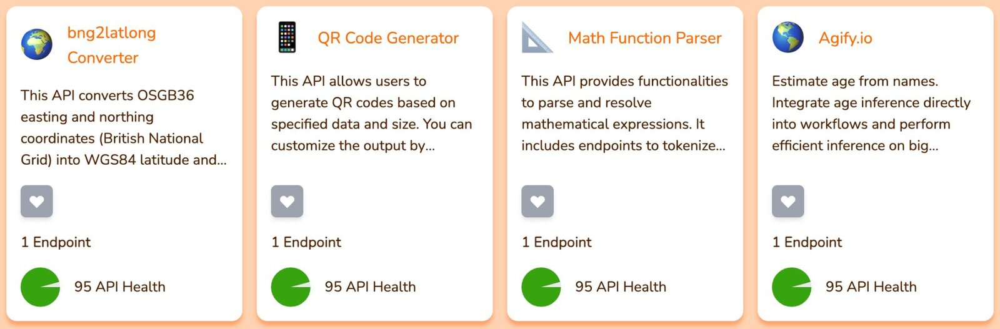
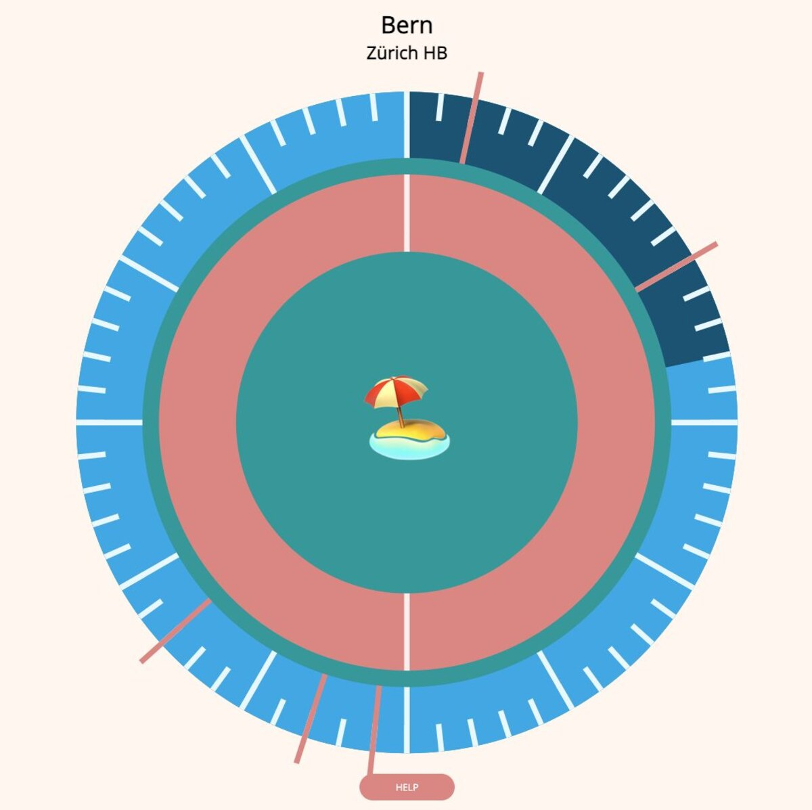
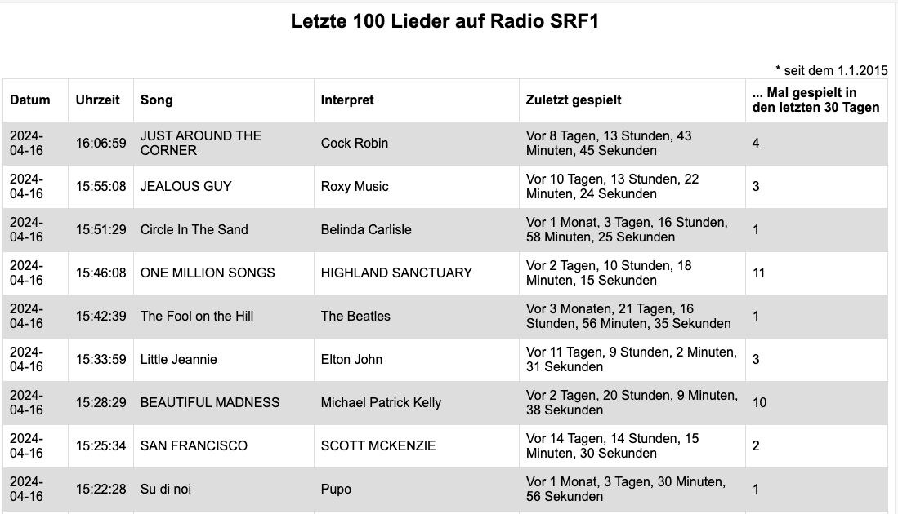
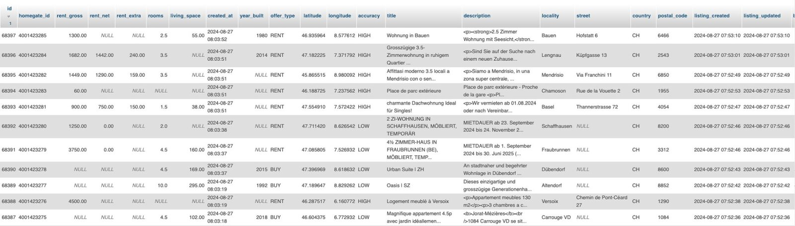
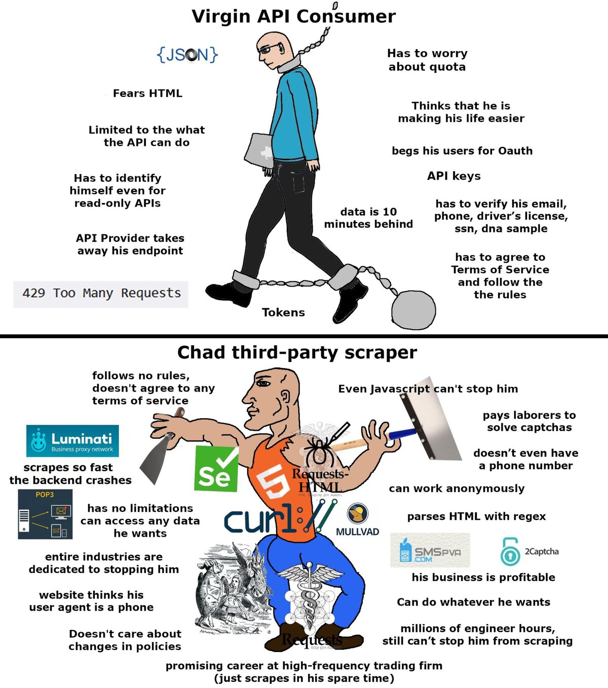

- Was ihr am Ende gebaut habt
- Wie die Daten dorthin kommen
- Woher die Daten überhaupt kommen
- Euer Projekt und eure Gruppe
Interaktive Medien 3
nick.schneeberger@fhgr.ch
Eine Geschichte, die ohne ihre Daten nicht erzählbar wäre.


Ihr geht in Vierergruppen von Station zu Station und notiert pro Station:
Ihr braucht keine Technik zu erraten, nur die Daten.
Zahlen, die eine Frage wirklich beantworten können.
Ein Zeitraum, über den sich etwas verändert.
Eine Grafik, in der man die Veränderung sieht.
Text, der sagt, warum das jemanden angeht.
Die ersten beiden Teile beschafft ihr, die letzten beiden gestaltet ihr.
Neu ist für die meisten nur die linke Spalte.
Vier Schritte, die im ganzen Kurs gleich bleiben.
Jeder Schritt ist eine eigene PHP-Datei mit genau einer Aufgabe.
Extract, Transform und Load heissen überall so und werden zu ETL abgekürzt.
Unload ist unser eigener Name für den Schritt danach.
Ihr holt die Daten, säubert sie und speichert sie in der Datenbank.
Am Ende liefert ihr einen JSON-Endpunkt aus.
Ihr baut die Story und die Grafik mit Chart.js.
Ihr startet mit erfundenen Daten und wechselt später auf den echten Endpunkt.
Damit das zusammenpasst, einigt ihr euch früh auf die Feldnamen der JSON-Ausgabe.
| Was ihr lernt | |
|---|---|
| Zuerst | PHP so weit, dass ihr Daten verarbeiten könnt |
| Dann | Die vier Schritte der Kette, einer nach dem anderen |
| Dann | Grafik, Story und Gestaltung |
| Am Schluss | Zusammenbauen, testen und am Marktstand zeigen |
Euer eigenes Projekt läuft vom ersten Tag an nebenher mit.
Vier Wege, an Zahlen zu kommen – zwei davon braucht ihr wirklich.
Eine fertige Datei, die jemand veröffentlicht hat.
Eine Adresse, die auf Anfrage aktuelle Daten zurückgibt.
Die versteckte Datenquelle einer Website finden.
Die Website selbst auslesen, weil es keine Datenquelle gibt.
Für euer Projekt zählen vor allem die ersten beiden.
So kommt ein Datensatz meistens daher:
Und so verhält er sich:
Ein Datensatz ist für ein Kursprojekt fast immer die ruhigere Wahl.


Offizielle Daten von Bund, Kantonen und Städten.
Weltweite Sammlung, oft kurios und selten geprüft.
Eine eigene Tabelle, ein Export, eine Zählung.
Prüft immer, wer die Daten erhoben hat und wann zuletzt.
Pro Steckbrief notiert ihr zwei Fragen:
Danach wandert der Steckbrief zur nächsten Gruppe weiter.
Was eine API ausmacht:
Womit ihr rechnen müsst:
Eine API liefert meist nur den aktuellen Wert – die Geschichte entsteht erst, wenn ihr selbst sammelt.
| Wo | Was es gibt | Kosten |
|---|---|---|
| transport.opendata.ch | Fahrplan und Abfahrten in der Schweiz | gratis |
| open-meteo.com | Wetter, auch rückwirkend bis 1940 | gratis |
| openweathermap.org | Wetter weltweit | gratis mit Kreditkarte |
| freepublicapis.com | Sammlung getesteter offener APIs | gratis |
Open-Meteo begleitet uns später durch den ganzen Kurs.

Zum Stöbern gut, als Projektgrundlage oft zu dünn.

Viele Websites laden ihre Inhalte selbst als JSON nach.
Diese Adressen sind nicht dokumentiert und können jederzeit verschwinden.

Ihr öffnet zu zweit vorbereitete Websites und sucht im Netzwerk-Tab die Datenantwort.
Pro gefundene Quelle gibt es einen Punkt.
Dann liest man die Website selbst aus und schneidet die Werte aus dem HTML.
Ändert die Website ihr Layout, ist euer Skript kaputt.

Wer eine API benutzt, hält sich an Regeln, Kontingente und Nutzungsbedingungen.
Wer scrapt, hält sich an nichts – und fliegt dafür irgendwann raus.
Für euer Projekt gilt: nehmt die API, wenn es eine gibt.

| Weg | Im Kurs |
|---|---|
| Datensatz als Datei | Ja, wir lesen JSON und CSV gemeinsam ein |
| Öffentliche API | Ja, wir holen Daten von Open-Meteo |
| Sensorbox im Raum | Ja, sie verhält sich wie eine API |
| Reverse Engineering | Nur zum Anschauen |
| Webscraping | Nur zum Anschauen |
Wählt eine einzige Quelle für euer Projekt.
Vier Personen, eine Frage, ein Datensatz, eine Grafik.
Ihr beantwortet eine Frage mit Daten, die ihr selbst beschafft, gespeichert und sichtbar gemacht habt.
Nicht drei, auch wenn es verlockend klingt.
Eine oder zwei Tabellen reichen völlig.
Er versorgt euer Frontend mit allem Nötigen.
Sie muss eure Frage beantworten, nicht beeindrucken.
| Ihr zeigt | |
|---|---|
| M1 | Die Gruppe steht und die Rollen sind verteilt |
| M2 | Eure Datenfrage ist formuliert |
| M3 | Der Datensatz ist gefunden und geprüft |
| M4 | PHP liest eure echten Daten ein |
| M5 | Die Daten sind gesäubert und einheitlich |
| M6 | Die Daten stehen in der Datenbank |
| M7 | Euer JSON-Endpunkt funktioniert |
| M8 | Die erste echte Grafik steht |
| M9 | Die Fassung ist ausstellungsfähig |
| M10 | Marktstand und Abgabe |
Ohne Daten keine Data-Story – und Daten holt man sich, statt auf sie zu warten.
Nächster Schritt: PHP auf dem eigenen Rechner zum Laufen bringen